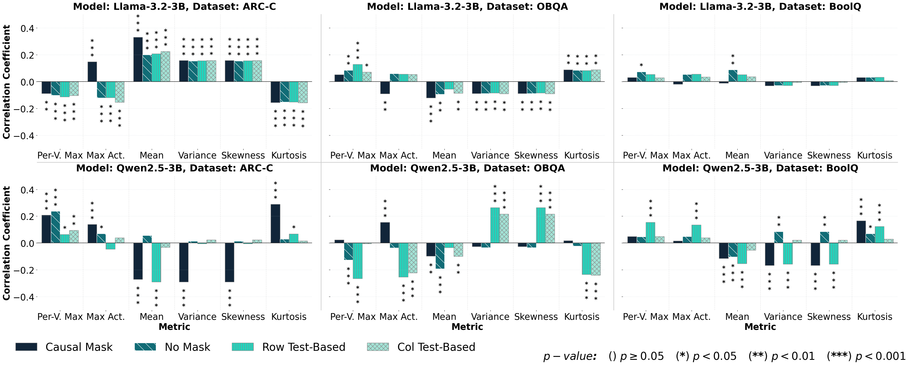
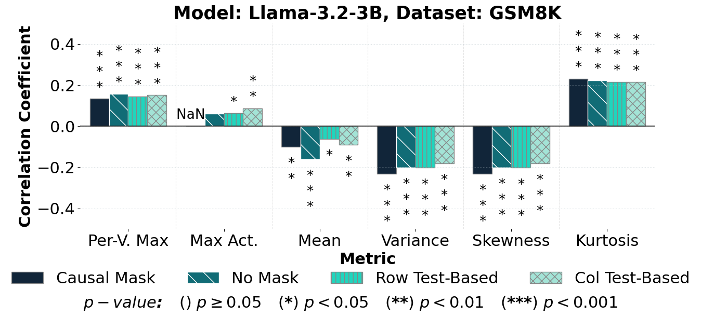
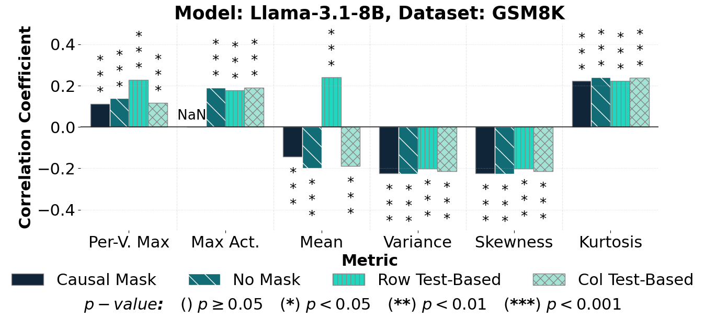
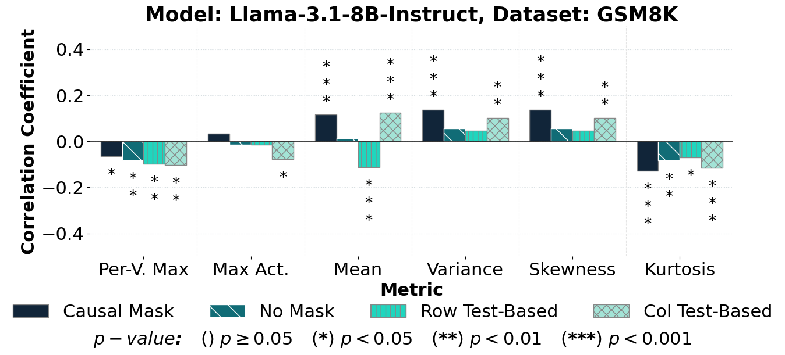
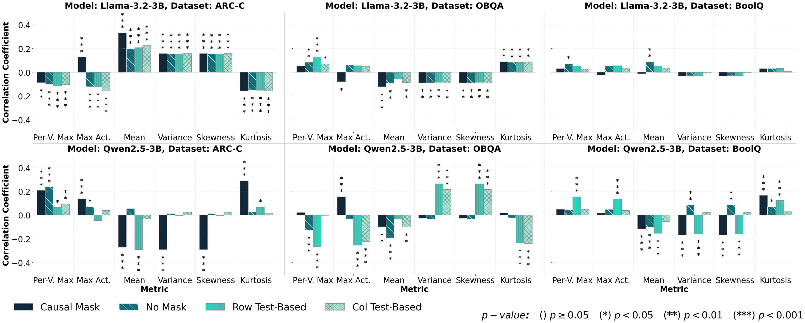

Larger Model Variant (8B)
We also explore the usage of Llama-3.1-8B to investigate the behaviour on larger variants.
Deep active learning has previously been explored for LLM in-context sample selection, but not with methods that utilise recent advances in understanding of transformer activations. In this paper, we test the hypothesis that model activations could provide a fine-grained signal to optimise the selection of in-context examples. We present a comprehensive analysis of MLP activation-based deep active learning methods applied to in-context learning, including how different attention masking strategies impact active learning across diverse classification and generative datasets, using both Llama-3.2-3B and Qwen2.5-3B base models. However, we find a negative result: MLP and embedding layer outputs, viewed through the lenses of massive activations or the first four moments, do not correlate with example quality or task performance. Specifically, the absolute Spearman correlation coefficient is at most 0.33 for all tasks and models we tested, showing that such activation-based sampling should not be used for in-context learning. We hypothesise that this may be due to superposition, whereby models represent more features than they have dimensionality, suggesting that methods like Sparse Autoencoders (SAEs) may be a promising future direction.
We find a lack of correlation for both Llama-3.2-3B and Qwen2.5-3B across all three classification/multi-choice tasks tested. The Spearman coefficient is at most 0.33 in these tasks.

The lack of correlation persisted when using Llama-3.1-3B on GSM8K.

We also explore the usage of Llama-3.1-8B to investigate the behaviour on larger variants.

For completness, we also investigate Llama-3.1-8B-Instruct to explore the impact of supervised fine-tuning.

The lack of correlation is still maintained and the changes in values are unnoticeable.

Here we look at ARC-C due to the high numbers of coefficient to process. Depsite some layers having higher correlations than others, the correlation does not exceed the current highscore of 0.33.
@article{osman2026activation,
title = {Activation-Based Active Learning for In-Context Learning: Challenges and Insights},
author = {Osman, Yaseen M and Merrett, Geoff V and Middleton, Stuart E},
journal = {arXiv preprint arXiv:2606.05134},
year = {2026},
}